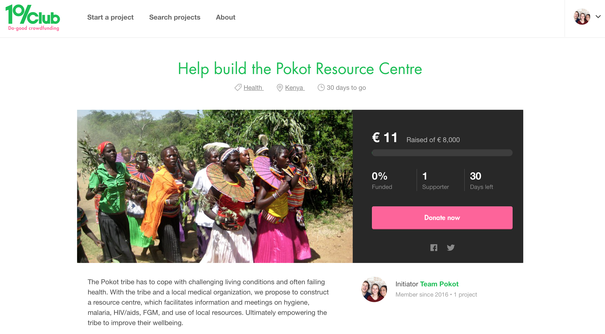

NEWS
Pokot Benefit Party & Last week of crowd fund on 1%Club!
03.12.2016 Amsterdam, The Netherlands
Thank you to all the people who attended and donated at the Pokot Benefit Party. We hope you enjoyed the party and the african influenced music. Your support is truly appreciated! We accomplished a lot already, but we are not their yet. The crowd fund is active until Friday 9th of December and you can help us achieve our goal! Go to the crowd fund via this link
Thank you to all the people who attended and donated at the Pokot Benefit Party. We hope you enjoyed the party and the african influenced music. Your support is truly appreciated! We accomplished a lot already, but we are not their yet. The crowd fund is active until Friday 9th of December and you can help us achieve our goal! Go to the crowd fund via this link
Pokot Benefit Party Friday December 2nd at BRET
11.11.2016 Amsterdam, The Netherlands
To boost the crowd fund we are organizing a benefit party with amazing dj's of ZeeZout, Breakfast Club and MOOD. It is Friday 2nd of December from 10PM at BRET Amsterdam (in front of train station Sloterdijk). At the venue we will have an information stand from 5PM and you are most welcome to join us for drinks. By donating 10 euro on our crowd fund pageyou reserve a spot on the guest list. You can find more information about the party on our Facebook event page
To boost the crowd fund we are organizing a benefit party with amazing dj's of ZeeZout, Breakfast Club and MOOD. It is Friday 2nd of December from 10PM at BRET Amsterdam (in front of train station Sloterdijk). At the venue we will have an information stand from 5PM and you are most welcome to join us for drinks. By donating 10 euro on our crowd fund pageyou reserve a spot on the guest list. You can find more information about the party on our Facebook event page
Pokot crowd fund now online on website of 1%Club!
09.11.2016 Amsterdam, The Netherlands
Today we launched the crowdfund for the Pokot Resource Centre on the website of 1%Club! The 1%Club is the do-good crowdfunding platform to kick-start initiatives that really can make a difference. We're very happy to be part of this club :-) Support our project with for example one pair of working shoes (20 euro) or a one week salary including lunch for one local construction worker (23 euro). Go to the crowd fund via this link

Today we launched the crowdfund for the Pokot Resource Centre on the website of 1%Club! The 1%Club is the do-good crowdfunding platform to kick-start initiatives that really can make a difference. We're very happy to be part of this club :-) Support our project with for example one pair of working shoes (20 euro) or a one week salary including lunch for one local construction worker (23 euro). Go to the crowd fund via this link
Dinner with the students at Postkantoor in Delft
17.10.2016 Delft, The Netherlands
The students and Team Pokot had a lovely dinner at restaurant the Postkantoor in Delft to get to know each other a bit better before leaving to the remote valleys of East Pokot.
The students and Team Pokot had a lovely dinner at restaurant the Postkantoor in Delft to get to know each other a bit better before leaving to the remote valleys of East Pokot.
Meet the students from the minor International Entrepreneurship and Development of Delft University of Technology
07.09.2016 Delft, The Netherlands
We would like to introduce to you the four highly motivated students from Delft University of Technology who will contribute to the project by setting up a business plan, designing a rainwater harvesting system and helping with the preparations for construction. Tobias, Thirza, Eileen and Martijn welcome!
We would like to introduce to you the four highly motivated students from Delft University of Technology who will contribute to the project by setting up a business plan, designing a rainwater harvesting system and helping with the preparations for construction. Tobias, Thirza, Eileen and Martijn welcome!
Support of the project by Meijer CnF
24.08.2016 Amsterdam, The Netherlands
The Pokot Resource Centre Project has a new sponsor and partner! Meijer CnF - office for Accountancy, Administration and Financial & Tax Advice - has donated their expertise and help for an amazing amount of 5000 euro. Thank you Meijer CnF for your exceptional support!

The Pokot Resource Centre Project has a new sponsor and partner! Meijer CnF - office for Accountancy, Administration and Financial & Tax Advice - has donated their expertise and help for an amazing amount of 5000 euro. Thank you Meijer CnF for your exceptional support!
Planning of the realisation of the centre
10.06.2016 Delft, The Netherlands
Together with the EPMP we have decided to construct the Pokot Resource Centre from February 2017 to May 2017. Before starting construction, we will develop the final design, construction drawings, costs calculation and a construction planning together with an architect and contractor from Nairobi. This we will do from November until January.
In November four students from the minor International Entrepreneurship and Development of Delft University will go to Pokot to start with the preparations. We will join them in December.
Together with the EPMP we have decided to construct the Pokot Resource Centre from February 2017 to May 2017. Before starting construction, we will develop the final design, construction drawings, costs calculation and a construction planning together with an architect and contractor from Nairobi. This we will do from November until January. In November four students from the minor International Entrepreneurship and Development of Delft University will go to Pokot to start with the preparations. We will join them in December.
A cooperation with the TU Delft
30.05.2016 Delft, The Netherlands
We and Otto Kroesen, the coordinator of the minor 'International Entrepreneurship and Development' (IE&D) of the Faculty Technology, Policy and Management at Delft University of Technology, have started a renewed collaboration. When we return to Pokot, we will be accompanied by four students of the minor 'IE&D. Two students will focus on the process of managing the construction of the centre and two will design a rainwater harvesting installation for the centre.
We and Otto Kroesen, the coordinator of the minor 'International Entrepreneurship and Development' (IE&D) of the Faculty Technology, Policy and Management at Delft University of Technology, have started a renewed collaboration. When we return to Pokot, we will be accompanied by four students of the minor 'IE&D. Two students will focus on the process of managing the construction of the centre and two will design a rainwater harvesting installation for the centre.
Clay plaster course
21.05.2016 Delft, The Netherlands
Niek participated in a clay plastering workshop in Delft, to learn about clay plastering and to help constructing a small restaurant. Plastering with clay is a technique that is also frequently used by the Pokot. We might use this technique in the Pokot Resource Centre.
The workshop was organized by Vincent Scholten of Helder Architecten, who designed the restaurant of the children's farm in Delft. The workshop was led by Piotr Bronicki from Svarok, a company specialized in construction with straw and natural clay plaster.
Niek participated in a clay plastering workshop in Delft, to learn about clay plastering and to help constructing a small restaurant. Plastering with clay is a technique that is also frequently used by the Pokot. We might use this technique in the Pokot Resource Centre.
The workshop was organized by Vincent Scholten of Helder Architecten, who designed the restaurant of the children's farm in Delft. The workshop was led by Piotr Bronicki from Svarok, a company specialized in construction with straw and natural clay plaster.
Continuation of the Project
01.03.2016 Delft, The Netherlands
In the coming months we will finish our studies at the Delft University of Technology. In order to realize the centre directly after we finish our studies we have now started working on the project on a part time basis. Together with the EPMP we are continuing to raise funds. Next to this we are talking with the Delft University about a renewed collaboration.
In the coming months we will finish our studies at the Delft University of Technology. In order to realize the centre directly after we finish our studies we have now started working on the project on a part time basis. Together with the EPMP we are continuing to raise funds. Next to this we are talking with the Delft University about a renewed collaboration.
Project on hold to continue our studies
01.09.2012 Delft, The Netherlands
We have decided to continue our studies in Delft before we return to Pokot for the realization of the resource centre. This means the centre will not be realized in the coming years. It was a tough decision to make. We are convinced that our contribution to the project will be of a greater value after we have finished our masters. Next to our studies we will also take internships at architecture firms to increase our knowledge on architecture and construction.
We have decided to continue our studies in Delft before we return to Pokot for the realization of the resource centre. This means the centre will not be realized in the coming years. It was a tough decision to make. We are convinced that our contribution to the project will be of a greater value after we have finished our masters. Next to our studies we will also take internships at architecture firms to increase our knowledge on architecture and construction.
A Generous Donation
25.08.2012 Amsterdam, The Netherlands
The PRC project has been blessed with a most generous gift: Ronaldus Kok has given the project a boost by donating € 9.500. With this donation we are one step closer to construction of the centre.
The PRC project has been blessed with a most generous gift: Ronaldus Kok has given the project a boost by donating € 9.500. With this donation we are one step closer to construction of the centre.
Account S4S
31.05.2012 Delft, The Netherlands
The Pokot Community Centre Project now has a bankaccount number at Students 4 Sustainability! Students 4 Sustainability (S4S) is a foundation run by students from Delft University of Technology and it supports projects in third world countries done by students from Delft University of Technology. S4S believes that sustainable technology can offer a solution for local social and economical problems and this is why they support these student projects, but they also try to create awareness under other students about these projects. S4S has a ANBI status which means that it is more attractive to donate, since donations are tax deductible.
The Pokot Community Centre Project now has a bankaccount number at Students 4 Sustainability! Students 4 Sustainability (S4S) is a foundation run by students from Delft University of Technology and it supports projects in third world countries done by students from Delft University of Technology. S4S believes that sustainable technology can offer a solution for local social and economical problems and this is why they support these student projects, but they also try to create awareness under other students about these projects. S4S has a ANBI status which means that it is more attractive to donate, since donations are tax deductible.
Prize for Pokot Resource Centre!
09.02.2012 Delft, The Netherlands
We are back in the Netherlands and were just in time for our final presentation of our minor 'International Entrepreneurship and Development' Here we have won a prize of a €1000,- for the Pokot Resource project! This money is granted by Dr. Arnold Verschuyl and will be used for construction of the centre.
We are back in the Netherlands and were just in time for our final presentation of our minor 'International Entrepreneurship and Development' Here we have won a prize of a €1000,- for the Pokot Resource project! This money is granted by Dr. Arnold Verschuyl and will be used for construction of the centre.
Presentation at the Delft faculty of Architecture
06.02.2012 Barpello, Kenya
On Wednesday 15th of February we will give a Peca Kucha presentation about the project at the faculty of Architecture of Delft University of Technology. This is organized by Stylos, the study association from this faculty, together with Architectura et Amicitia. The theme of the evening is Social Engineering. We are in the 'Constructing over the border' group together with professor Alexander Vollebrecht and architect Robert van Katz. There is time for discussion between professors, architects and students after the presentations.
On Wednesday 15th of February we will give a Peca Kucha presentation about the project at the faculty of Architecture of Delft University of Technology. This is organized by Stylos, the study association from this faculty, together with Architectura et Amicitia. The theme of the evening is Social Engineering. We are in the 'Constructing over the border' group together with professor Alexander Vollebrecht and architect Robert van Katz. There is time for discussion between professors, architects and students after the presentations.
Publication in Pantheon Magazine
05.02.2012 Delft, The Netherlands
The first edition of this years Pantheon on social engineering has published about the Pokot Resource Centre project!
You can read the whole article here.
The first edition of this years Pantheon on social engineering has published about the Pokot Resource Centre project! You can read the whole article here.
Evaluation of Preliminary Design
16.01.2012 Nakuru, Kenya
Yesterday we arrived in Nakuru after a nine day stay in Barpello, East Pokot. In Barpello we have evaluated the design with the local people, Community Health Committee and Elders. We have gained more information about local building structures and their development. We have asked several people to write a small essay about how they see the future of Barpello; what they think are the challenges of this rural area and what is necessary to develop.
Nowadays Barpello is very difficult to reach, the roads are bad, as far as there are roads. But Chief Chemoi is constructing the Tarmac (asphalt) road from Marigat to Barpello which will be finished within three years. This road will change a lot for Barpello; it will connect them with ‘the developed world’ and will provide new opportunities concerning economy and education.
The Pokot interpret space and time very different from how people in Europe do, since they generally live outside. The main purpose of their houses is to give shelter at night and during heavy rains. All their activities take place outdoor, under a tree or somewhere in the shade. So for them, the meaning of a library, workplace or conference room differs a lot from our interpretation. We have studied, as much as possible in such short time, the way the Pokot live, move and gather and we will incorporate this knowledge in the design of the Community Centre.
The next ten days in Nakuru will be used to finalize the design and evaluate it with the contractor. We will also estimate the time required for construction of the centre.
Yesterday we arrived in Nakuru after a nine day stay in Barpello, East Pokot. In Barpello we have evaluated the design with the local people, Community Health Committee and Elders. We have gained more information about local building structures and their development. We have asked several people to write a small essay about how they see the future of Barpello; what they think are the challenges of this rural area and what is necessary to develop.
Nowadays Barpello is very difficult to reach, the roads are bad, as far as there are roads. But Chief Chemoi is constructing the Tarmac (asphalt) road from Marigat to Barpello which will be finished within three years. This road will change a lot for Barpello; it will connect them with ‘the developed world’ and will provide new opportunities concerning economy and education.
The Pokot interpret space and time very different from how people in Europe do, since they generally live outside. The main purpose of their houses is to give shelter at night and during heavy rains. All their activities take place outdoor, under a tree or somewhere in the shade. So for them, the meaning of a library, workplace or conference room differs a lot from our interpretation. We have studied, as much as possible in such short time, the way the Pokot live, move and gather and we will incorporate this knowledge in the design of the Community Centre.
The next ten days in Nakuru will be used to finalize the design and evaluate it with the contractor. We will also estimate the time required for construction of the centre.
Roads to Pokot in bad condition
15.11.2011 Barpello, Kenya
Stefanie, David and Carlijn arrived safely in Pokot, but after a long period of drought, the area has been hit by heavy rainfalls and several parts the roads are flushed away. The lorry with the materials is not able to drive to Pokot. We have to wait untill the road is fixed. Meanwhile we have sent our design to architects and our professors in the Netherlands in order to get feedback.
Stefanie, David and Carlijn arrived safely in Pokot, but after a long period of drought, the area has been hit by heavy rainfalls and several parts the roads are flushed away. The lorry with the materials is not able to drive to Pokot. We have to wait untill the road is fixed. Meanwhile we have sent our design to architects and our professors in the Netherlands in order to get feedback.
Development of Preliminary Design
07.12.2011 Nakuru, Kenya
After two weeks in Barpello, we are back in Nakuru to start the design of the centre. In Barpello we displayed everything that we analysed on a big wall in our room, this is our starting point for the design.
After completing the preliminary design, three of us will go back to Barpello and Niek will stay in Nakuru in order to arrange the preparations for construction. For example, printing the drawings so the Kenyan architect, who has done a lot of work for the diocese of Nakuru, can deliver the drawings to the local authorities for approval. Talk with the contractor about all the materials we need and about the moment we need them in the building process. Order materials in the hardware stores, gather local materials and make a cost calculation.
The preliminary design for the resource centre consists of one big 200 square meter roof. It covers an ‘open conference room’ with a round bench and a closed volume that includes an office, library and storage. The bench is made of concrete and is connected to a stage and corridor. The walls are 350mm thick and will be made of natural river stone with mud as mortar. These stones we can collect from a nearby river.
After two weeks in Barpello, we are back in Nakuru to start the design of the centre. In Barpello we displayed everything that we analysed on a big wall in our room, this is our starting point for the design. After completing the preliminary design, three of us will go back to Barpello and Niek will stay in Nakuru in order to arrange the preparations for construction. For example, printing the drawings so the Kenyan architect, who has done a lot of work for the diocese of Nakuru, can deliver the drawings to the local authorities for approval. Talk with the contractor about all the materials we need and about the moment we need them in the building process. Order materials in the hardware stores, gather local materials and make a cost calculation.
The preliminary design for the resource centre consists of one big 200 square meter roof. It covers an ‘open conference room’ with a round bench and a closed volume that includes an office, library and storage. The bench is made of concrete and is connected to a stage and corridor. The walls are 350mm thick and will be made of natural river stone with mud as mortar. These stones we can collect from a nearby river.
Program of Requirements
02.12.2011 Barpello, Kenya
The exact program for the centre was unknown when we were still it the Netherlands. After arriving in Kenya and meeting the Pokot and employees of EPMP we have defined a program of the resource centre, so it corresponds more to the needs of the users.
The program now consists of the following:
- Conference room 90sqm
- Library 40sqm
- Office 18sqm
- Storage 10sqm
The old nursery next to the community centre will be transformed into a computer classroom with a small storage.
The exact program for the centre was unknown when we were still it the Netherlands. After arriving in Kenya and meeting the Pokot and employees of EPMP we have defined a program of the resource centre, so it corresponds more to the needs of the users.
The program now consists of the following:
- Conference room 90sqm
- Library 40sqm
- Office 18sqm
- Storage 10sqm
The old nursery next to the community centre will be transformed into a computer classroom with a small storage.
Field Research
29.11.2011 Barpello, Kenya
We have been in Barpello for two weeks now. In those weeks we have talked with a lot of people and tried to gather as much information as possible. We have met the elders, the community health committee, employees of the East Pokot Medical Project and students from Barpello high school.
Questions that we asked are: 'How does a resource centre look like?' 'What functions do you think a resource centre should have?' Many never thought of these questions, so there was a lot of discussion in Pokot.
Next to the interviews, we did a stakeholder analysis and analyzed local building traditions and local materials. Also we have visited several locations where the centre could be built. Different future users proposed these locations.
We have been in Barpello for two weeks now. In those weeks we have talked with a lot of people and tried to gather as much information as possible. We have met the elders, the community health committee, employees of the East Pokot Medical Project and students from Barpello high school.
Questions that we asked are: 'How does a resource centre look like?' 'What functions do you think a resource centre should have?' Many never thought of these questions, so there was a lot of discussion in Pokot. Next to the interviews, we did a stakeholder analysis and analyzed local building traditions and local materials. Also we have visited several locations where the centre could be built. Different future users proposed these locations.
First visit to Pokot
23.11.2011 Barpello, Kenya
Barpello, isolated and very quiet, but ... very nice! In the last days Sr. Esther showed us the town and the environment with all the problems it's facing. After these two days, we discovered the location in mind by EPMP is right on our doorstep. A beautiful site, with incredible views of the valley! It is up to us to design and build the resource centre here. Everyone is very enthusiastic and wants to help. We spoke to many people, which was not always easy because of the language barrier, but we will get there. We have started analyzing the conditions and possibilities that the location and the environment offer. Next to this we have started to define the needs of the Pokot community and the program and size of the centre. We will document all our findings in a report to be used by us and others.
Barpello, isolated and very quiet, but ... very nice! In the last days Sr. Esther showed us the town and the environment with all the problems it's facing. After these two days, we discovered the location in mind by EPMP is right on our doorstep. A beautiful site, with incredible views of the valley! It is up to us to design and build the resource centre here. Everyone is very enthusiastic and wants to help. We spoke to many people, which was not always easy because of the language barrier, but we will get there. We have started analyzing the conditions and possibilities that the location and the environment offer. Next to this we have started to define the needs of the Pokot community and the program and size of the centre. We will document all our findings in a report to be used by us and others.
Rammed Earth Course
29.10.2011 Bergen, The Netherlands
Niek and Carlijn went to the village Bergen in the Netherlands to help and learn about the rammed earth blocks technique!
This project is an initiative of three architects and four artists. The architects designed a small building of rammed earth blocks, which will accommodate a temporarily exhibition of the artists. They constructed the building together.
We have learned how to make a mould, how to select adequate sand and clay and what the right proportions are. It takes 20 days for the blocks to dry and the mortal is made of the same mixture except its not dried. The pavilion is temporarily since the construction is not water resistant.
Niek and Carlijn went to the village Bergen in the Netherlands to help and learn about the rammed earth blocks technique!
This project is an initiative of three architects and four artists. The architects designed a small building of rammed earth blocks, which will accommodate a temporarily exhibition of the artists. They constructed the building together.
We have learned how to make a mould, how to select adequate sand and clay and what the right proportions are. It takes 20 days for the blocks to dry and the mortal is made of the same mixture except its not dried. The pavilion is temporarily since the construction is not water resistant.